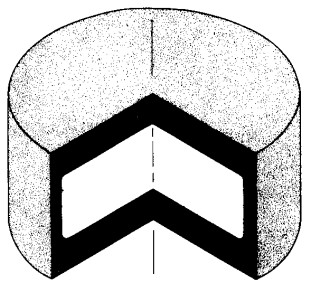
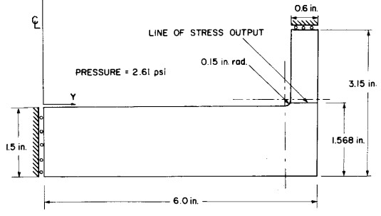
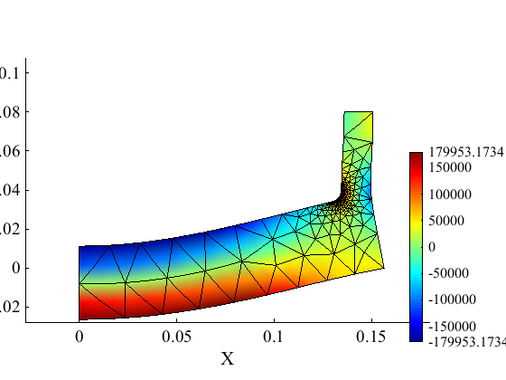
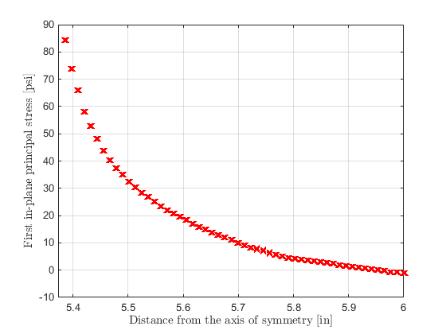
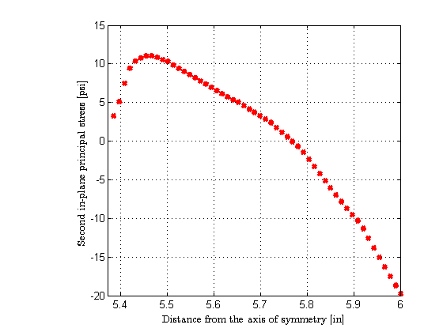
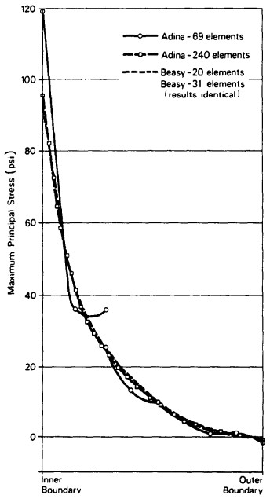
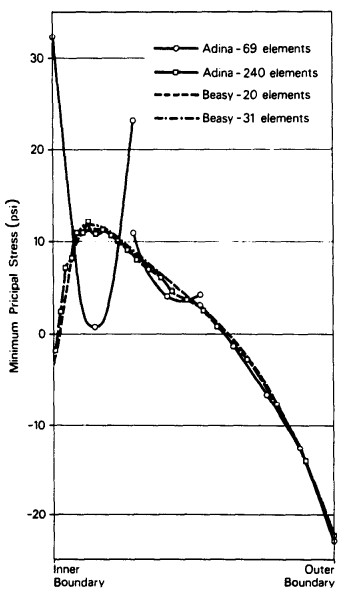
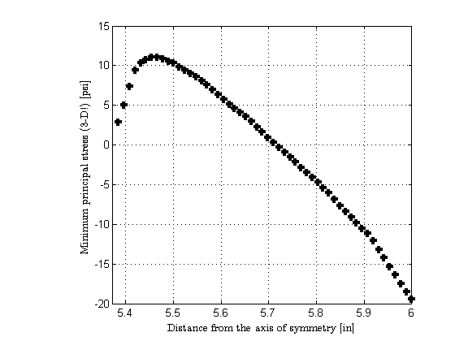

Floyd's pressure vessel
Contents
Link to the m-file.
Description
Thick-walled pressure vessel of Araldite has an axis of symmetry and a plane of symmetry perpendicular to its axis Therefore only half of the generating section is shown in Figure 1. The vessel is loaded by internal pressure. Linear elasticity model is employed with a homogeneous isotropic material (Young's modulus of 1435 psi and Poisson's ratio .49).
|   |
| Figure 1. Thick-walled pressure vessel of Araldite |
The structure was studied in the book by Babuska, Szabo. The authors point out that very few problems have been studied both experimentally (with photoelasticity) and analytically (with finite and boundary element methods). For this problem, a pressure vessel with axial symmetry loaded by internal pressure (see Figure 1), both experimental studies and numerous analytical investigations have been published.
For instance, Sussman and Bathe applied finite element analysis and observed significant oscillations of the stress when it was computed from the displacement field for serendipity eight node elements.
Brebbia and Trevelyan used boundary element method and produced quite convincing clean results.
References
- Sussman T, Bathe KJ (1985) STUDIES OF FINITE-ELEMENT PROCEDURES - ON MESH SELECTION. Computers & Structures 21: 257-264.
- Brebbia CA, Trevelyan J (1986) ON THE ACCURACY AND CONVERGENCE OF BOUNDARY ELEMENT RESULTS FOR THE FLOYD PRESSURE-VESSEL PROBLEM. Computers & Structures 24: 513-516.
- Szabo BA (1991) ON RELIABILITY IN FINITE-ELEMENT COMPUTATIONS. Computers & Structures 39: 729-734.
The book describes the goal as "Compute the location, orientation, and magnitude of the largest principal stress and give evidence that the computed values are accurate to within 5% relative error".
Solution
function pub_Floyd
u= physical_units_struct;
The material parameters are taken from the Szabo (1991) paper.
E= 1435*u.PSI;%
nu=0.49;
Geometrical dimensions.
R1= 6*u.IN;% Rf=0.15*u.IN;% R2=R1-0.6*u.IN;% L1=3.15*u.IN;% L2=1.5*u.IN;% targetY=1.568*u.IN;% Location of the stress output line
Magnitude of the pressure applied on the interior surface of the vessel.
Pressure=2.61*u.PSI;
The mesh is generated using mesh control that adjusts the gradation so that near the fillet between the and the wall is highly refined. Away from this high-concentration area the mesh is generated rather coarse.
mesh_size=R1/(2^3);
[fens,fes,groups,edge_fes,edge_groups]=targe2_mesher({...
['curve 1 line ' num2str([0,0]) ' ' num2str([R1,0]) ],...
['curve 2 line ' num2str([R1,0]) ' ' num2str([R1,L1]) ],...
['curve 3 line ' num2str([R1,L1]) ' ' num2str([R2,L1]) ],...
['curve 4 line ' num2str([R2,L1]) ' ' num2str([R2,L2+Rf]) ],...
['curve 5 arc ' num2str([R2,L2+Rf]) ' ' num2str([R2-Rf,L2])...
' center ' num2str([R2-Rf,L2+Rf]) ],...
['curve 6 line ' num2str([R2-Rf,L2]) ' ' num2str([0,L2]) ],...
['curve 7 line ' num2str([0,L2]) ' ' num2str([0,0]) ],...
['subregion 1 property 1 boundary 1 2 3 4 5 6 7'],...
['m-ctl-point constant ' num2str(mesh_size)],...
['m-ctl-point 1 xy ' num2str([R2-Rf,L2+Rf]) ...
' near ' num2str(mesh_size/40000) ' influence ' num2str(Rf/100)],...
}, 1.0, struct('axisymm',true,'quadratic',true));
% drawmesh({fens,fes},'fes','facecolor','red'); view(2); return
Compose the model data.
clear model_data
model_data.fens =fens;
Note that we are setting the "axial symmetry" flag.
clear region region.E =E; region.nu =nu; region.reduction ='axisymm'; region.fes= fes; region.integration_rule = tri_rule (struct('npts', 3)); model_data.region{1} =region;
The essential boundary conditions are applied on the plane of symmetry ...
clear essential % the symmetry plane essential.component= 2; essential.fixed_value= 0; essential.node_list = fenode_select (fens,struct('box',[0 R1 L1 L1],'inflate',L1/1000)); model_data.boundary_conditions.essential{1} = essential;
... And the axis of symmetry.
clear essential % the axis of symmetry essential.component= 1; essential.fixed_value= 0; essential.node_list = fenode_select (fens,struct('box',[0 0 0 L1+L2],'inflate',L1/1000)); model_data.boundary_conditions.essential{2} = essential;
Three separate traction definitions are provided. One on the vertical surface:
clear traction traction.fes= subset(edge_fes,edge_groups{4}); traction.integration_rule = gauss_rule (struct('dim', 1, 'order', 2)); traction.traction = [Pressure;0]; model_data.boundary_conditions.traction{1} = traction;
One on the surface of the fillet.
clear traction traction.fes= subset(edge_fes,edge_groups{5}); traction.integration_rule = gauss_rule (struct('dim', 1, 'order', 2)); traction.traction = @(x) (Pressure*(x-[R2-Rf,L2+Rf])'/norm((x-[R2-Rf,L2+Rf]))); model_data.boundary_conditions.traction{2} = traction;
And the last one on the surface of the bottom.
clear traction traction.fes= subset(edge_fes,edge_groups{6}); traction.integration_rule = gauss_rule (struct('dim', 1, 'order', 2)); traction.traction = [0;-Pressure]; model_data.boundary_conditions.traction{3} = traction;
Call the static solver.
model_data =deformation_linear_statics(model_data);
The deformed shape is shown with the color-coded hoop stress (#3).
model_data.postprocessing.u_scale= 5;
model_data.postprocessing.stress_component=3;
model_data.postprocessing.stress_range = 10*[-Pressure,+Pressure];
model_data.postprocessing.use_spr=true;
model_data=deformation_plot_stress(model_data);
view (2); ;
 Now we will calculate the principal stresses along the output line indicated in Figure 1. The calculation here is based on postprocessed stress results. We use the super convergent patch recovery to compute nodal stress fields, and then we calculate the principal stresses from the continuous nodal stress field.
The principal stress values along the output line will be calculated for each output point by interpolating the nodal field. We will re-triangulate the nodes by splitting each quadratic triangle into three linear triangles (only for the interpolation purposes). The output point will then be located within a particular triangle, and the value at the output point will be interpolated from the three corners of the triangle.
We begin by defining the re-triangulation of the mesh. The triangles are defined using the connectivity of each quadratic triangle to split it into four subtriangles.
tri=[fes.conn(:,[1,4,6]);fes.conn(:,[4,2,5]);fes.conn(:,[3,6,5]);fes.conn(:,[4,5,6]);];
The output points are generated along the output line.
xi=[linspace(5.373*u.IN,6.0*u.IN,55)',zeros(55,1)+targetY];
The four components of the Cauchy stress tensor that are present in the axially symmetric model are computed by the super convergent patch recovery.
First we calculate the four nodal fields, one for each component.
fld1 = field_from_integration_points_spr(model_data.region{1}.femm, ...
model_data.geom, model_data.u, [], 'Cauchy',1);
fld2 = field_from_integration_points_spr(model_data.region{1}.femm, ...
model_data.geom, model_data.u, [], 'Cauchy',2);
fld3 = field_from_integration_points_spr(model_data.region{1}.femm, ...
model_data.geom, model_data.u, [], 'Cauchy',3);
fld4 = field_from_integration_points_spr(model_data.region{1}.femm, ...
model_data.geom, model_data.u, [], 'Cauchy',4);
The stresses are now processed to extract the principal stresses. Since the cited references refer only to the principal-stress components in the plane of the generating section, we will make sure we compute only the in-plane principal stresses.
We will need to loop over all computed nodal stresses, perform the eigenvalue problem solution, and assign the principal stresses at the nodes.
stresses = [fld1.values,fld2.values,fld3.values,fld4.values];
Ps=zeros(size(stresses,1),3);%
for q= 1:size(stresses,1)
Note that the eigenvalue problem is two-dimensional: in the plane of the generating section we have only three stress components.
[V,D]=eig(stress_3v_to_2x2t (material_deformation,stresses(q,[1, 2, 4])));
sD=sort(diag(D),'descend');
Ps(q,1:2)=sD; Ps(q,3)=stresses(q,3);
end
The computed principal stresses at the nodes are now interpolated to the points along the output line. The utility simplex_grid_interpolation performs the location of the output points within the triangles and the interpolation from the nodes.
This is the distribution of the first (maximum) in-plane principal stress along the line of stress output.
fxi = simplex_grid_interpolation(model_data.geom.values,Ps(:,1),tri,xi);
figure;
plot(xi(:,1)/u.IN,fxi/u.PSI,'rx', 'linewidth',3)
set(gca,'xlim',[min(xi(:,1)),max(xi(:,1))]/u.IN)
grid on
labels( 'Distance from the axis of symmetry [in]' , 'First in-plane principal stress [psi]')
 This is the distribution of the second (minimum) in-plane principal stress along the line of stress output.
fxi = simplex_grid_interpolation(model_data.geom.values,Ps(:,2),tri,xi);
figure;
plot(xi(:,1)/u.IN,fxi/u.PSI,'rx', 'linewidth',3)
set(gca,'xlim',[min(xi(:,1)),max(xi(:,1))]/u.IN)
grid on
labels( 'Distance from the axis of symmetry [in]' , 'Second in-plane principal stress [psi]')
 The above graphs compare favorably with results produced by the references. For instance as shown in Figure 2:
|   |
| Figure 2. Maximum and minimum principal in-plane stress from Brebbia and Trevelyan (1986) |
An alternative procedure to calculate the principal stresses is to use the field_from_integration_points_spr method. In the present case the hoop-direction principal stress is always the intermediate principal stress along the output line. (Perhaps not elsewhere!) Therefore, requesting the third principal stress produces the same plot of the minimum principal stress as above.
stressf = field_from_integration_points_spr (model_data.region{1}.femm, ...
model_data.geom, model_data.u, [], 'princCauchy',3, ...
struct('outputRm',eye(3)));
fxi = simplex_grid_interpolation(model_data.geom.values,stressf.values,tri,xi);
figure;
plot(xi(:,1)/u.IN,fxi/u.PSI,'k+', 'linewidth',3)
set(gca,'xlim',[min(xi(:,1)),max(xi(:,1))]/u.IN)
grid on
labels( 'Distance from the axis of symmetry [in]' , 'Minimum principal stress (3-D!) [psi]')
 Discussion
end